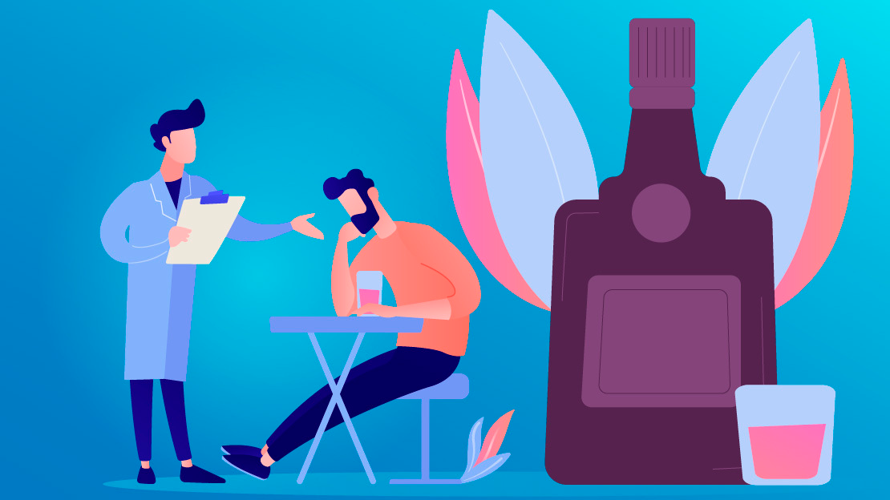
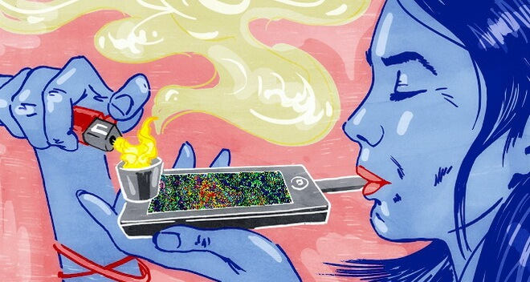

Bienvenido Adicciones

¿Qué es una Adicción?
Según la Organización Mundial de la Salud (OMS) una adicción es una enfermedad física y psicoemocional que crea una dependencia o necesidad hacia una sustancia, actividad o relación. Se caracteriza por un conjunto de signos y síntomas, en los que se involucran factores biológicos, genéticos, psicológicos y sociales.

Tipos de Adicciones
- Adicciones a Sustancias: Tabaco, alcohol, drogas ilegales (cocaína, heroína, marihuana), medicamentos recetados.
- Adicciones Comportamentales: Juego patológico, adicción al sexo, adicción a internet, adicción al trabajo.
- Adicciones Alimentarias: Anorexia nerviosa, bulimia nerviosa, trastorno por atracón.
- Adicciones a la Tecnología: Nomofobia (miedo a estar sin el teléfono móvil), adicción a los videojuegos.
- Otras Adicciones: Compras compulsivas, adicción a las cirugías plásticas, adicción a las noticias negativas.
Causas y Efectos de las Adicciones
Las adicciones pueden ser causadas por factores genéticos, ambientales y psicológicos. Sus efectos incluyen problemas de salud física y mental, problemas sociales, y económicos.
Prevención y Tratamiento
La prevención incluye educación y estrategias de afrontamiento saludables. El tratamiento puede incluir terapia cognitivo-conductual, grupos de apoyo y tratamientos médicos.
Recursos y Ayuda
Enlaces a organizaciones y recursos adicionales para obtener ayuda y apoyo:
Contacto